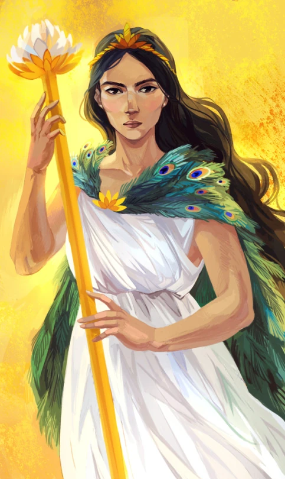
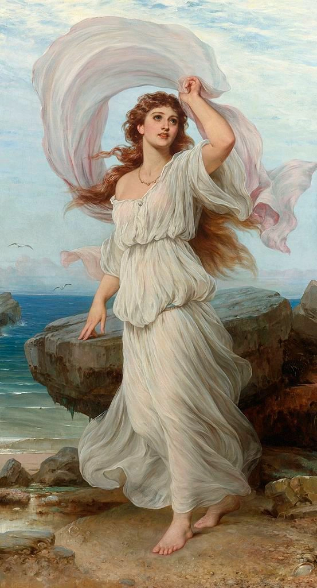
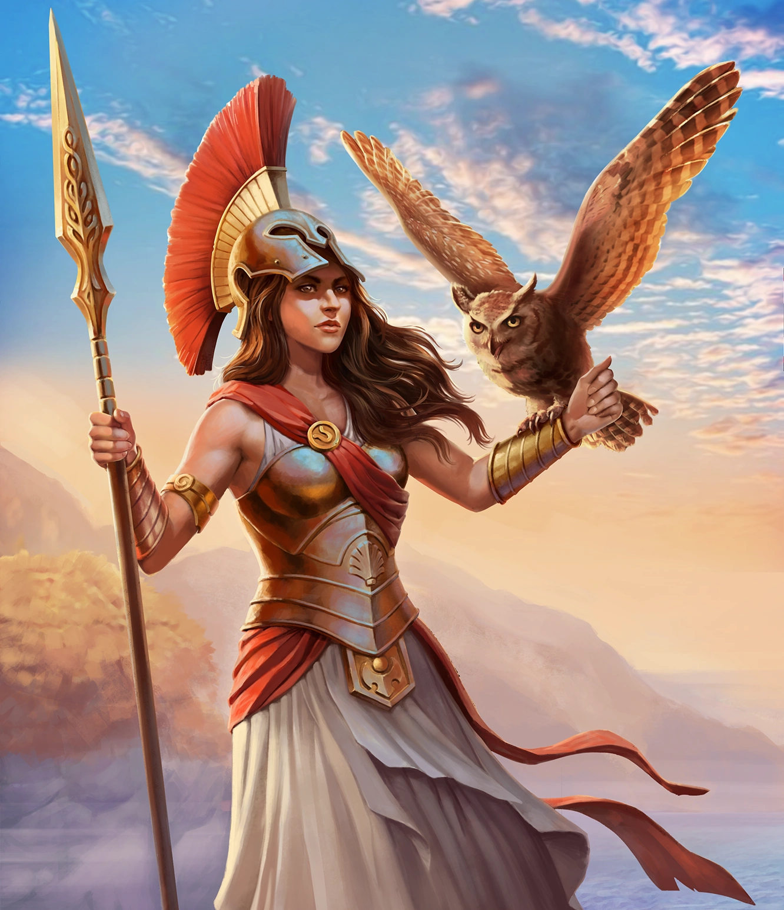

This personality quiz is inspired by the Judgment of Paris. Instead of choosing the most beautiful goddess, you'll discover which goddess you align with most:
Hera
Aphrodite
Athena
Goddess of marriage and power
Goddess of love and beauty
Goddess of wisdom and strategy



You'll be given 15 questions. For each one, choose the answer that resonates most with you. Some questions include a fourth option. If none of the main answers feel right, but you also wouldn't choose the option labeled "If you don't like these, would you never do this one?", you can select that fourth option to break the tie.
You're now ready to begin the test!
You got !
Works Cited
Homer. The Iliad. Translated by Samuel Butler, The Internet Classics Archive, Massachusetts Institute of Technology, classics.mit.edu/Homer/iliad.3.iii.html. Accessed 22 Apr. 2026.
Homer. The Odyssey. Translated by Emily Wilson, W. W. Norton & Company, 2018.
Homeric Hymns. Translated by H. G. Evelyn-White, Theoi Greek Mythology, www.theoi.com/Text/HomericHymns1.html. Accessed 21 Apr. 2026.